What is Chess and What is the Goal?
Chess is a two-player game where each player has a set of 16 chess pieces that can be grouped into:
- Pawns (8)
- Knights, (2)
- Rooks (2)
- Bishops (2)
- King (1)
- Queen (1)
A fully set up chess board looks like this:
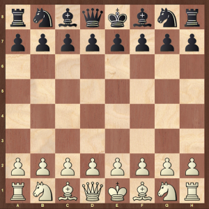
Each type of piece moves, attacks or defends in different ways.
Your goal is to use those pieces to “checkmate” your opponent; to put it more simply, your goal is to simultaneously threaten (aka “check”) your opponent’s king—with your pieces—and prevent his/her king from escaping (aka “checkmate”).
One big misconception is that you can capture (or “kill”) the king in a chess game, which is simply untrue. Your goal is solely to trap the King and threaten to capture, not to capture the piece itself.
If you can do this, then you have won the game!
Rules of Chess #1: The Chessboard
A standard chessboard consists of 64 alternating dark and light squares as well as an initial setup of 32 pieces.
So in the diagram below:
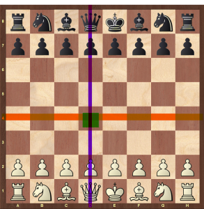
- the vertical purple arrow represents the d-file
- the horizontal red line represents the 4th rank
- and the green square is the intersection of the d-file/4th rank, which we simplify to “d4”
Every square has its own coordinate. For more examples, the square on the left of “d4” is “c4,” and the square above “d4” is “d5.”
Rules of Chess #2: The Chess Pieces
Each piece mentioned also has a capital letter that corresponds to the piece moving. Here is a list of what each piece’s 1-letter abbreviation is:
- Bishop
- Rook
- Queen
- King
- Pawn
- Knight
Just know that usually players just leave a pawn move as “d4” instead of “Pd4”
Also, we use “N” for knight because “K” is already used for king.
So if a pawn were to move on the “d4” square, we could say either “d4” or “Pd4” as the first move. The diagram below shows a green arrow to represent the move “d4” :
Now you may be asking how this even relates to chess. After all, isn’t it just a bunch of letters and numbers?
Of course, it is! Still, using these coordinates (in the “piece-file-rank” or “file-rank” format) is how we can more clearly communicate where pieces are moving.
Rules of Chess #3: Setting up Chess Pieces
In setting up the board, let’s use our newfound knowledge to organize what pieces are where on the chessboard:
Here are the steps to set up the chessboard:
Step 1. Place 8 pawns across the 2nd and 7th ranks
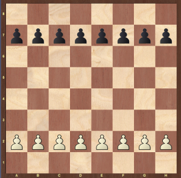
Step 2. Place 2 rooks on the a1/a8 and h1/h8 squares
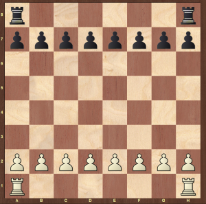
Step 3. Place 2 knights on the b1/b8 and g1/g8 squares
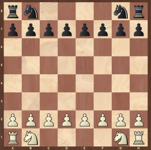
Step 4. Place 2 bishops on the c1/c8 and f1/f8 squares
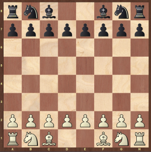
Step 5. And finally place the queens on the d1/d8 squares and the kings on the e1 and e8 squares. A good way to remember is that the Queen always goes on the square of her color. So, the White queen is on the light-colored d1 square. The Black queen is on the dark-colored d8 square.
Congrats! You successfully set up a chessboard. And you have almost mastered the most important chess rules!
Now onto how to play and some basic strategies!
Rules of Chess #3: How Does Each Piece Move?
1.Rook
The rook can move to as many non-occupied squares left, right, up, or down.
To simplify, think of a “+ sign” when you think about how the rook moves.
Additionally, the rook cannot jump over other pieces.
As you can see in the diagram below, the green arrow shows all the possible squares the rook could go to in a single move. The red boxes show squares the rooks cannot go to because of other pieces in the way.
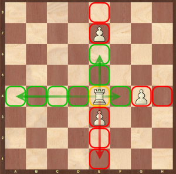
2.Bishop
The bishop can move similarly to any non-occupied square but in the diagonal direction.
Here, you can think of the bishop’s movements as an “x”
Similarly, like the rook, the bishop cannot jump over other pieces.
Lastly, take a look at this diagram for a better visual of how the bishop can and cannot move:
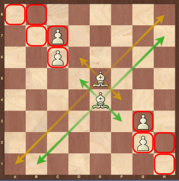
3.Queen
The queen has the power of both the bishop and rook in that it can move in both the + and x direction but cannot jump over other pieces.
Here is a diagram of the queen’s movements:
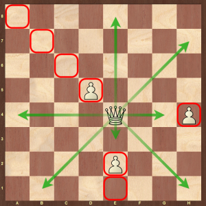
4.King
The king is a pretty simple piece in that it can move one square in any direction and cannot jump over other pieces (I think you see a pattern here).
Here is a king-movement diagram:
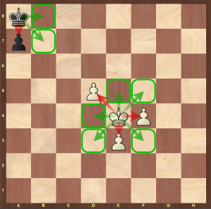
5.Knight
Now this is where we break the pattern and this all gets a little tricky. By definition, the knight moves two non-diagonal squares in any direction and then one non-diagonal square in either perpendicular direction (or vice versa).
But I think you can agree that is a mouthful!
The best way to think about how the knight moves is in an “L shape.” By this, I mean that if you can make an L or backwards L, you can move your knight in that direction.
It is also great to look at this diagram for a better visualization:
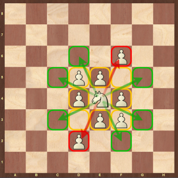
6.Pawn
Finally, we get to the pawn. Though this piece may seem simple, it too has its nuances in play.S
Generally, the pawn moves up 1 rank (1 square up) per move. But in the first move, any pawn can move up 2 ranks (2 squares up).
Each of the green/yellow arrows in the diagram below shows possible moves for White to play:
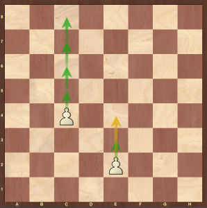
Rules of Chess #4: How Does Each Piece Capture?
The bishop, queen, king, and rook can all directly capture a single piece per move that is in its path of motion. Looking back at all the diagrams in the above section, if we replace any of the White pawns with Black pieces, the White piece at play can capture one of the now Black pieces and place the original White piece in its square.
The same goes for the White knight.
Keep in mind that the White knight can jump over any pieces, regardless of color or “worth” (something we will discuss in the next section. In the diagram below, you can see all the 8 possible captures that the knight can do while in the center of the board:
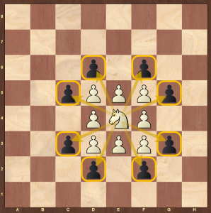
However, pawn captures can get a little bit tricky. Though pawns can move forward, they cannot capture forward. Rather, pawns capture diagonally.
The diagram shows the two possible types of captures for pawns in chess.
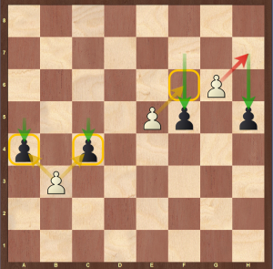
Rules of Chess #5: Special Captures
- Normal Pawn Capture: The White pawn on b3 can capture either of the Black pawns on a4 or c4.
- En-Passant: In this special move, the White pawn on e5 can capture the pawn on f5 ONLY if the White pawn is on the 5th rank and Black immediately plays a pawn next to the White pawn.
Keep in mind that, as a part of the rule, you can only make this capture immediately once your opponent has played into the 5th rank (or 4th if you are Black).
If you wait for a move, en-passant cannot occur.
- Invalid En-Passant: If Black plays into the 5th rank but your pawn is not on the same rank as the Black pawn, then en-passant cannot happen.
Rules of Chess #6: Special Moves/Terminology in Chess
Like en-passant, there are two other special moves in chess:
1. Special Chess Rule – Castling
Castling occurs by moving the king and rook in one move as per the diagrams below. Also know that castling is the only time you can move two pieces in one move:
Before Castling:
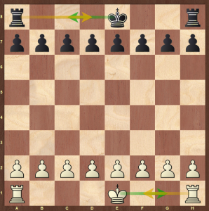
2. Special Chess Rule – Promotion
Promotion occurs if a pawn reaches the final rank (either the 1st or 8th). At this time, the pawn can be swapped for any other piece except for a king or another pawn. Because the queen is the most powerful piece, almost all the time it is chosen. In some cases, choosing another piece, like a knight, may prove to be more helpful!
Additionally, here is some more technical chess jargon [chess rules as well] that you might hear at clubs and tournaments:
Gambit
This means a potential pawn sacrifice. The diagram below shows the very common Queen’s Gambit opening that you are likely to see in future games!
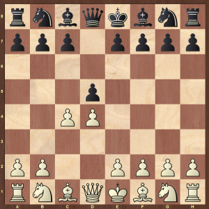
“Adjust” – Touch Move
Because it is generally a polite rule (both inside and outside official tournaments) to move any piece that you touch, players usually say “adjust” when they want to reposition a piece to the center of a square.
Basics Chess Tactics
1. Fork
This is when a single piece attacks 2 or more of your opponent’s pieces. Take a look at this diagram of a very powerful “Family Fork:”
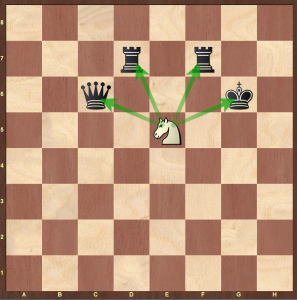
6. Pin
A pin is when a piece of lower value blocks the path to a piece of higher value. This can become very dangerous because it can cause the piece of lower value to get targeted. The diagram below shows an example of a pin on the Black king.
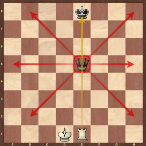
Opening, Middlegame, and Endgame
Each of these terms describes what part of the game a position is in. Usually, once the queens are traded an endgame is either reached or soon to be reached.
Once you master the basics it is recommended to work on your positional chess. Improvements in this area will really help your overall chess. I recommend getting started with the principle of two weaknesses
Notation
This describes the act of writing moves on paper to review later. This can help you review your games after playing.
What is “Queening”?
A synonym of promotion. This is because most of the time promotion -> queen
What is Stalemate?
This describes a situation when one side has no legal moves to make, thereby making a draw. If you want to learn more about stalemating, take a look at this article (link to Stalemate
What is Zugzwang?
This is a word to describe a position where there are no good moves to be made. To put it more frankly, any move made would be losing.
Usually, zugzwang happens in king and pawn endgames, which require very meticulous play!
Rules of Chess #7: How Much is Each Piece Worth?
Though generally point values are based on positions, we can give each piece a generic point value that almost always is about correct:
Pawn:
The pawn is worth 1 point but has the potential, through promotion to gain much more!
Knight or Bishop:
Both of these pieces are worth around 3 points in the game. As you continue playing, you’ll notice how the bishop is generally slightly more powerful than the knight. This would then give it a 3.5 point value.
Rook:
The rook is worth about 5 points and is known to be, along with the queen, a “heavy” piece.
Queen:
The queen is worth 9 points and is the most value (other than the King) in the game.
King:
Lastly, we have the king, which can be thought to have an infinite point value because if you lose control over the king, the game is over.
Rules of Chess #8: The Clock
Many chess games use what are known as chess clocks.
They look like this:
These clocks give each player a certain amount of time to which if one player’s time runs out, he/she loses the game!
We also usually categorize games into 4 major categories based on time:
- Bullet: where 2 minutes or less are given to each player
- Blitz: where 5 minutes or less are given to each player
- Rapid: where 10-20 minutes or less are given to each player
- Classical: where more than 20 minutes and up to many hours are given to each player